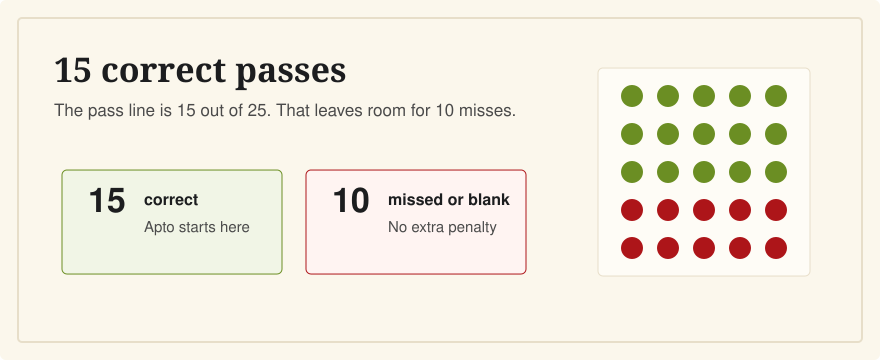

How Many Questions Can I Miss on the CCSE?
Last verified: June 5, 2026
You can miss up to 10 questions and still pass the ordinary CCSE exam, because the pass mark is 15 correct answers out of 25.

The CCSE has 25 questions. You need 15 correct answers, which is 60%. Wrong answers and blank answers are worth 0 points and are not penalized. That means 15 correct passes, 14 correct does not.
The Simple Math
Instituto Cervantes states that each correct CCSE answer is worth 1 point and each wrong or blank answer is worth 0. There is no extra penalty for an incorrect answer, so you should answer every question.
- 25 questions total
- 15 correct answers needed to pass
- 10 mistakes allowed if the other 15 are correct
- 14 correct answers is below the pass mark
What Result You Receive
The official certificate reports the global result as Apto, No apto, or No presentado. Instituto Cervantes says the certificate does not show your exact score. Results are normally communicated about 20 days after the exam through the candidate's private exam portal, according to the official CCSE grades page.
How to Use the 10-Mistake Cushion
The pass mark gives you room for errors, but it is not a reason to study only answer letters. The exam is in Spanish, and small wording differences can matter. For English speakers, the practical goal is to make the common civic vocabulary familiar enough that you can recognize the question under exam pressure.
A sensible target in practice is consistently scoring above 20 out of 25 before the exam. That gives you a buffer for nerves, unfamiliar ordering, or questions where the Spanish wording feels different from your study app.
Common Scoring Mistakes
Leaving blanks
Since blank answers and wrong answers are both worth 0, blanks do not help. If you are unsure, eliminate what you can and choose the most likely answer.
Memorizing only letters
The official study bank can change by year. Even when you recognize a question, you need to understand enough Spanish to connect the wording with the correct idea.
Ignoring task balance
Government, law, and citizen participation make up most of the exam. Do not spend all your time on geography and culture if you are still missing basic institutions and rights.
Related Guides
- What is the CCSE exam?
- How hard is the CCSE?
- How long should I study for the CCSE?
- What happens if I fail the CCSE?
Sources
- Instituto Cervantes: CCSE format and scoring
- Instituto Cervantes: CCSE grades, certificates, and results
- Instituto Cervantes: CCSE frequently asked questions
CCSE English shows the Spanish question, the English meaning, and a short explanation, so your practice scores are based on understanding.